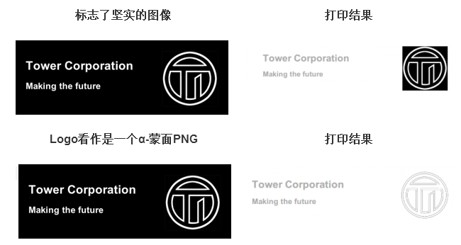

不经过任何处理而直接打印网站上的页面会得到一个不理想的效果。我们WEB开发人员可以简单的采用几个要点来使之达到较为合适的效果：
- 使用响应式布局设置打印的效果
- 打印背景图片和颜色，在合适的时候
- 添加显示的网址或页面链接，以供参考
- 使用css filter 提高打印的图形效果
针对打印的样式，而不是屏幕显示样式
首先，我们需要使用媒体查询（media query）针对 打印样式设置。
@media print {
}
重新针对打印写CSS样式是没有必要的，我们只需要针对差异设置打印的样式覆盖掉之前的默认样式。大多数的浏览器会自动根据打印更改颜色，以节省打印原料，但是我们还是尽可能的手工设置一下。为了达到最佳效果，使颜色清晰明了。我们至少需要包含一下基本的打印样式。
@media print { body { color: #000; background: #fff; } }
对于打印，大多数情况下我们不需要打印整个页面，只需要打印一个简洁的能够突出需要信息的页面，那么我们将不相关的部分隐藏掉（如：导航条、背景图片）。
/* Default styles */
h1 {
color: #fff;
background: url(banner.jpg);
}
@media print {
h1 {
color: #000;
background: none;
}
nav, aside {
display: none;
}
}
在编写打印样式表的时候，你要注意要使用厘米或者英寸作为单位而不是屏幕像素单位，实际的单位对打印非常有用。为了保证打印样式有用，写CSS样式使打印的内容距离纸张边缘，看起来更好，需要使用 @page 这个语法：
@media print {
h1 {
color: #000;
background: none;
}
nav, aside {
display: none;
}
body, article {
width: 100%;
margin: 0;
padding: 0;
}
@page {
margin: 2cm;
}
}
为了保证不被跨页打印，如一个标题和内容在页面底部被分开：
h2, h3 { page-break-after: avoid; }
另一中情况是要防止图片过宽而超出纸张边缘：
img {
max-width: 100% !important;
}
第三个要点是确保 articles 文章标签的内容，在新的一页开始：
article {
page-break-before: always;
}
最后，还要注意列表和图片不被分开在不同的页：
ul, img {
page-break-inside: avoid;
}
尽管这些还不完美，不过这是一个良好的开始
### 背景图片和颜色
对于一些网站，颜色和背景图还是非常必要需要遵循的。如果用户是在 webkit 内核浏览器上打印的话，我们可以强制打印机打印屏幕上所看到的颜色（即强制在打印页面上出现任何的背景图和颜色），一般来说彩色打印机可以做到这点，我们需要一个单独的媒体查询：
@media print and (color) {
* {
-webkit-print-color-adjust: exact;
print-color-adjust: exact;
}
}
遗憾的是，这不能马上应用于firefox opera 和IE.
### 扩展打印样式里的超链接
如果直接打印，超链接将只是一点文字，而不会出现链接的网址，这样来说，是没有意义的。我们可以将url链接展示在打印的页面上，我们可以使用:after伪类来实现而不影响周围的元素布局：
@media print {
article a {
font-weight: bolder;
text-decoration: none;
}
article a[href^=http]:after {
content:" <" attr(href) "> ";
}
}
看下面这是HTML:
<p>You’ve explored this <a href="/blog">website</a>; now it’s time to <a href="http://www.webplatform.org/">read other Web development documentation</a>.</p>
下面是显示的效果：

其中一个问题是，打印页面上的锚文本和图像链接也将扩大。我们可以很好的用CSS规则修复
article a[href^="#"]:after {
content: "";
}
链接周围图像是比较麻烦的，理想的情况是图像周围的链接将有一个class.
$a:after > img {
content: "";
}
CSS4选择器实现将很简单：
a:not(:local-link):after {
content:" <" attr(href) "> ";
}
所有这些方法都假定用户将继续通过手工输入网址。 一个更好的解决方案是通过提供匹配的QR码的数字版本的页面更容易访问。
### 打印链接二维码使之更容易访问
如下图： 我们需要使用谷歌 图形API来实现：
* 我们希望谷歌提供的图表信息（ `qr` ，在我们的例子中）;
* 呈现大小的的QR印记，以像素为单位;
* URL进行编码;
* 使用的字符编码形式。
通常我们会在页面顶部的一个标题元素关联的URL：
<header>
<h1>Lizabeth’s Salon</h1>
<h2>Providing Intellectual Stimulation Online Since 2001</h1>
</header>
为了创造预期的打印结果，我们将提供足够的间距给H1用来放置二维码。因为这个二维码需要增加到每个页面。我们需要增加一条CSS规则：
@media print {
header h1:after {
content: url(https://chart.googleapis.com/chart?cht=qr&chs=150x150&chl=http://yourdomain.com&choe=UTF-8);
position: absolute;
right: 0;
top: 0;
}
}
这个方法的缺点是使开发者每个元素都请求一个API。如果你的主机是PHP，则可以自动生成当前页面的URL:
@media print {
h1:after {
content: url(https://chart.googleapis.com/chart?cht=qr&chs=150x150
&chl=http://<?=$_SERVER["SERVER_NAME"].$_SERVER["REQUEST_URI"];?>
&choe=UTF-8);
position: absolute;
right: 0;
top: 0;
}
}
给wordpress的样式：
@media print {
h1:after {
content: url(https://chart.googleapis.com/chart?cht=qr&chs=150x150
&chl=http://<?phpthe_permalink();?>&choe=UTF-8);
position: absolute;
right: 0;
top: 0;
}
}
使用CSS3 Filter 提高打印的质量
浏览器通常会打印出横幅图像，特别是如果有问题的旗帜在黑暗的背景是白色的： 
@media print {
header {
background: none;
color: #000;
}
header img {
filter: url(inverse.svg#negative);
-webkit-filter: invert(100%);
filter: invert(100%);
}
}
CSS3的过滤器做什么，你所期望的 - 在头图像反色，变成黑白色，反之亦然 - 但它们只能在Chrome和Safari。 为了弥补Firefox，我们需要一种不同的方法 - 相当于过滤器作为一个单独的SVG文件写：
<svg xmlns=“http://www.w3.org/2000/svg“>
<filter id=“negative”>
<feColorMatrix values=“-1 0 0 0 1
0 -1 0 0 1
0 0 -1 0 1
0 0 0 1 0” />
</filter>
</svg>
从理论上讲，你可以使用一个CSS sprite 之间进行切换不同版本的打印的标志，但是这将意味着增加一倍的文件大小可能没有什么好处。 相反，我建议使用CSS过滤器（和SVG当量，为Firefox）的反转图像之前，打印的页面： 印刷两种形式的标志（即α-蒙面PNG或纯黑色背景）的结果是：
总结
由于打印不方便跟踪，而且缺乏重视。在WEB开发中也往往被忽略，大多数时候我们只阅读线上的网页，而不是打印出来。 另一方面即使人们只是偶尔需要打印的东西从网站，这将是理想的，如果页面设计适合的打印机，就像现代的网站适应各种屏幕尺寸和设备。 打印的自适应设计，可用性和可访问性和Web开发的重要组成部分，同样应考虑的另一个方面。 处理打印自适应设计的另一个方面，我们实现更多的网站用户的需求-并在同一时间，节省墨水，纸张和其他资源，所有这些都是重要的方面可持续发展的设计 。